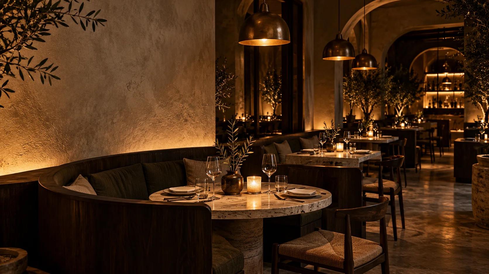

Good food takes its time.
So should you.
The lights get lower. The night gets longer.

Good food takes its time.
So should you.
The lights get lower. The night gets longer.
Seasonal plates, open fire, and a menu that follows what tastes best right now.


Familiar enough to settle in. Different enough to remember. Find your corner and let the night unfold.
Step inside
Never rush the night.
A table is waiting.
Join us tonight Tuesday–Sunday · dinner from 5 pm